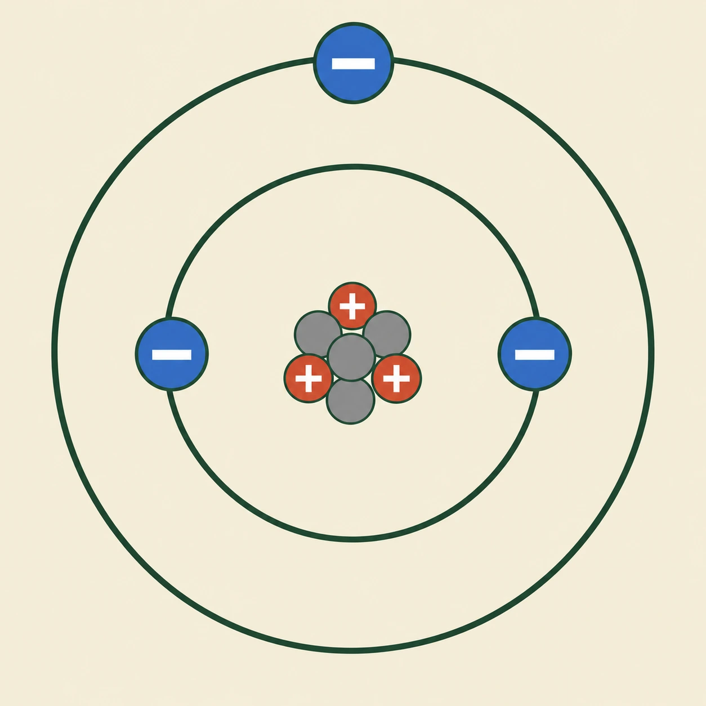
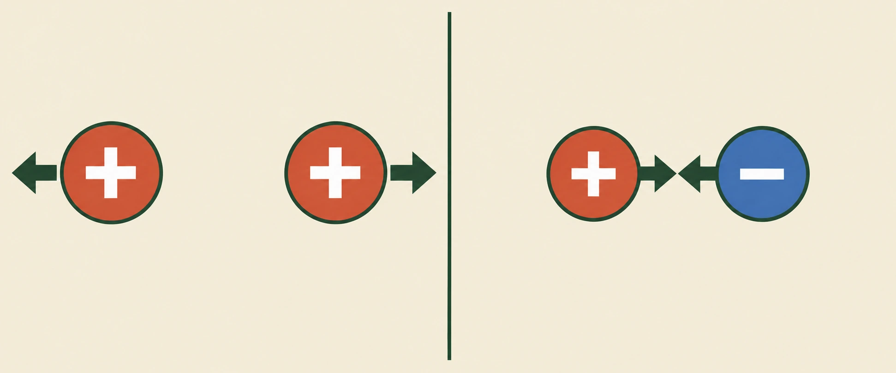
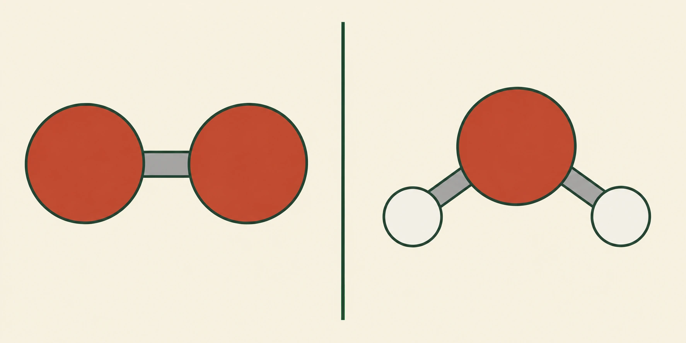
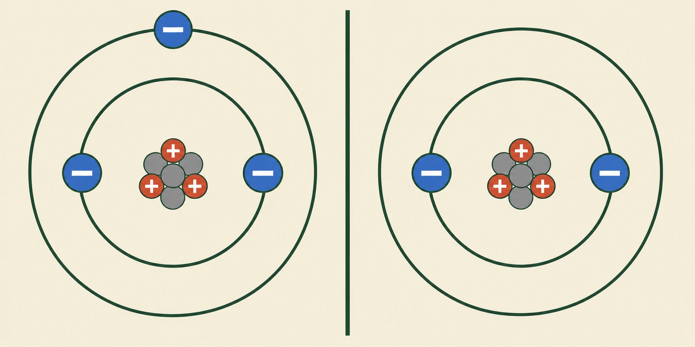

- En atom har en kärna i mitten och elektroner runt omkring
- I kärnan finns protoner (positiva) och neutroner (ingen laddning)
- Lika laddningar repellerar — stöter bort varandra
- Olika laddningar attraherar — dras till varandra
- Antalet protoner bestämmer vilket ämne det är
Allt omkring dig består av atomer — luften du andas, vattnet du dricker, stolen du sitter på och du själv. Atomer är otroligt små. Om du la en miljon atomer på rad skulle raden fortfarande vara tunnare än ett hårstrå, och ingen har någonsin sett en atom i ett vanligt mikroskop. Ändå vet vi ganska precis hur en atom är byggd.
Atomens delar
En atom har två delar. I mitten finns atomkärnan, som är mycket liten men innehåller nästan hela atomens massa. Runt kärnan finns elektroner som rör sig hela tiden.
Inne i kärnan finns i sin tur två sorters partiklar: protoner och neutroner. Det blir alltså tre partiklar att hålla reda på — protoner och neutroner inne i kärnan, elektroner utanför.
- Var i atomen kärnan sitter, och hur liten den är jämfört med hela atomen
- Att protonerna är markerade med + och elektronerna med −
- Att neutronerna inte har något tecken alls

Laddningar
Protoner och elektroner har något som kallas elektrisk laddning. Protonerna är positiva, och vi skriver det med ett plustecken. Elektronerna är negativa, och de skrivs med ett minustecken. Neutronerna har ingen laddning alls — de är neutrala, och det är därifrån namnet kommer.
Vad laddningar gör med varandra
Laddningar påverkar varandra på två sätt, beroende på om de är lika eller olika.
Två laddningar som är lika stöter bort varandra. Två positiva stöter bort varandra, och två negativa gör samma sak. Det kallas att de repellerar.
Två laddningar som är olika dras i stället mot varandra. En positiv och en negativ dras ihop, och det kallas att de attraherar. Du känner igen det från magneter: vänder du två magneter åt fel håll trycker de emot varandra, men vänder du en av dem snäpper de ihop.
- Att alla laddningar på vänster sida har samma tecken
- Att höger sida har ett av varje
- Åt vilket håll pilarna pekar i vardera halvan
- Vilken sida där kloten ligger närmast varandra

Det här är en av kemins viktigaste regler, och vi kommer tillbaka till den om och om igen.
En fråga du kanske ställer dig
I kärnan sitter protonerna tätt tillsammans, och alla är positiva. Men positiva laddningar ska ju repellera varandra — varför flyger inte kärnan isär?
Svaret är att det finns en annan kraft inne i kärnan. Den är mycket starkare än laddningarnas kraft, men den fungerar bara på extremt korta avstånd, och den håller ihop både protonerna och neutronerna. Neutronerna hjälper till med den kraften utan att lägga till någon laddning, och det är därför de behövs.
Antalet protoner avgör allt
Nu kommer det viktigaste i hela avsnittet: det är antalet protoner som bestämmer vilket ämne atomen är.
En atom med 1 proton är väte. En atom med 6 protoner är kol. En atom med 8 protoner är syre. Alltid. Byter du antalet protoner har du ett helt annat ämne, och det finns inget sätt att ha 8 protoner och ändå vara något annat än syre.
Det vi kallar ett atomslag är alltså bara ett annat ord för atomer med samma antal protoner.
En hel atom är neutral
En vanlig atom har lika många protoner som elektroner. Ta syre: 8 protoner, alltså 8 plus, och 8 elektroner, alltså 8 minus. Plusen och minusen tar ut varandra och kvar blir noll. Därför säger vi att atomen är neutral — den har ingen laddning utåt, trots att det finns massor av laddningar inuti.
Neutronerna påverkar inte det här, eftersom de inte har någon laddning. Därför kan två atomer av samma ämne ha olika många neutroner och ändå vara samma ämne — det är antalet protoner som avgör, ingenting annat. Sådana varianter kallas isotoper.
Elektronerna längst ut
Elektronerna ligger inte huller om buller runt kärnan utan håller sig på olika avstånd. De som ligger längst ut är de viktigaste för oss, och de kallas valenselektroner.
Anledningen är enkel: när två atomer möts är det ytterelektronerna som möts först, och det är de som avgör om något händer. Vi kommer att arbeta mycket med valenselektroner framöver.
Namn och beteckningar
Varje atomslag har en kort beteckning. Väte skrivs H, syre O, kol C och natrium Na. Alla atomslag finns samlade i det periodiska systemet, som vi tittar på i nästa avsnitt.
- En atom består av en atomkärna med protoner och neutroner, och elektroner runt kärnan
- Antalet protoner bestämmer vilket atomslag atomen tillhör
- Lika laddningar repellerar varandra, olika laddningar attraherar varandra
- En hel atom är neutral — lika många protoner som elektroner
- Valenselektronerna sitter ytterst och avgör hur atomen reagerar
All materia omkring oss är uppbyggd av mycket små partiklar. Luften vi andas, vattnet vi dricker, maten vi äter och våra egna kroppar består av atomer. Atomer är så små att de inte går att se med vanliga mikroskop. Ändå vet vi mycket om hur de är uppbyggda.
En atom består av en atomkärna och elektroner som rör sig runt kärnan. I atomkärnan finns protoner och neutroner.
Protonerna har positiv elektrisk laddning. Elektronerna har negativ elektrisk laddning. Neutronerna saknar laddning och är därför neutrala.
Elektriska laddningar påverkar varandra på två sätt. Två laddningar med samma tecken — två positiva eller två negativa — stöter bort varandra. Vi säger att de repellerar varandra. Två laddningar med olika tecken — en positiv och en negativ — dras mot varandra. Vi säger att de attraherar varandra.
Det är en av kemins grundregler. Den förklarar inte bara hur atomen hålls ihop, utan också mycket av det vi kommer att arbeta med framöver.
Men den väcker också en fråga. I atomkärnan sitter flera protoner tätt tillsammans, och alla är positiva — de borde repellera varandra och driva isär kärnan. Att det inte sker beror på att det finns en annan kraft som verkar inne i kärnan. Den är mycket stark, men bara på extremt korta avstånd, och den håller ihop både protoner och neutroner. Neutronerna bidrar till den kraften utan att tillföra någon laddning, och det är därför de behövs.
Det är antalet protoner i atomkärnan som bestämmer vilket atomslag atomen tillhör. Alla väteatomer har en proton. Alla kolatomer har sex protoner, och alla syreatomer har åtta. Atomer med samma antal protoner tillhör alltså samma atomslag.
En vanlig atom är elektriskt neutral. Det betyder att den har lika många protoner som elektroner. En syreatom har åtta protoner och åtta elektroner. De positiva och negativa laddningarna tar ut varandra.
Neutronerna påverkar inte atomens laddning. Däremot kan atomer av samma atomslag ha olika många neutroner. Sådana varianter av samma atomslag kallas isotoper.
Elektronerna befinner sig på olika avstånd från kärnan. De elektroner som finns längst ut kallas valenselektroner. De är särskilt viktiga inom kemin, eftersom det är de som avgör hur atomen reagerar med andra atomer. Vi återkommer till dem när vi arbetar med det periodiska systemet och med kemiska bindningar.
Varje atomslag har en egen kemisk beteckning. Väte skrivs H, syre O, kol C och natrium Na. Alla atomslag finns ordnade i det periodiska systemet.
Varför faller inte kärnan isär?
På standardnivån sa vi att det finns en stark kraft inne i kärnan. Det stämmer, och nu ska vi titta närmare på vad den kraften faktiskt är.
Den heter den starka kärnkraften. Den verkar mellan alla partiklar inne i kärnan — protoner såväl som neutroner — och den är ungefär hundra gånger starkare än den elektriska repulsionen mellan protonerna. Men den har en avgörande begränsning: den når nästan ingenting. Utanför ett avstånd på några få kärndiametrar finns den i praktiken inte alls.
Det ger en balans mellan två krafter med helt olika räckvidd. Den elektriska repulsionen verkar över hela kärnan, och varje proton känner av alla andra protoner. Kärnkraften verkar bara mellan närmaste grannar. I en liten kärna vinner kärnkraften lätt, eftersom alla partiklar är grannar med varandra. Men ju större kärnan blir, desto fler protoner ska repellera varandra på avstånd, medan kärnkraften fortfarande bara håller ihop det som råkar ligga nära.
Det förklarar något som standardtexten nämnde utan att förklara: varför tunga atomslag har fler neutroner än protoner. Neutronerna bidrar till kärnkraften utan att öka repulsionen, och ju tyngre kärnan är, desto fler behövs för att kompensera. Helium har två protoner och två neutroner — lika många av varje. Bly har 82 protoner och omkring 126 neutroner, alltså betydligt fler neutroner än protoner.
Till slut räcker inte ens det. Hos de allra tyngsta atomslagen finns ingen kombination av protoner och neutroner som är stabil, och kärnan faller sönder av sig själv. De ämnena kallas radioaktiva. Uran och plutonium är exempel. Det som händer är alltså inte något mystiskt — det är samma balans mellan två krafter, där repulsionen till slut vinner.
Om modellen: standardtexten sa att neutronerna hjälper till. Det är sant men vagt. Det som faktiskt sker är att neutronerna bidrar till en kraft som håller ihop kärnan, utan att lägga till någon laddning som vill slita isär den. Den enklare bilden var inte fel — den var bara inte tillräckligt precis för att förklara varför bly behöver fler neutroner än helium.
Vad "elektronskal" egentligen döljer
Vi har sagt att elektronerna håller sig på olika avstånd från kärnan, och nästa avsnitt kommer att prata om elektronskal. Bilder i läroböcker visar ofta elektroner som små kulor i cirklar runt kärnan, ungefär som planeter runt solen.
Den bilden är användbar, men den är inte sann.
En elektron rör sig inte i en bana. Den har över huvud taget ingen bestämd position förrän man mäter den. Det som faktiskt finns är ett sannolikhetsmoln — ett område runt kärnan där elektronen troligen befinner sig, tätare på vissa ställen och glesare på andra. Ett sådant område kallas en orbital.
Orbitalerna har olika former. Den enklaste är klotformad och kallas s-orbital. Nästa sort, p-orbitalen, är formad som två droppar som möts vid kärnan och pekar åt var sitt håll. Det finns fler sorter med ännu mer komplicerade former.
Det som i skolan kallas ett elektronskal är egentligen en samling orbitaler som ligger på ungefär samma energinivå. Skalet är alltså inte en bana utan en gruppering.
Varför spelar det roll? Därför att orbitalernas former förklarar saker som skalmodellen bara kan konstatera. Vattenmolekylen är vinklad, och vinkeln är ungefär 105 grader — det beror på hur syreatomens orbitaler är riktade i rummet. Kolatomen kan binda fyra andra atomer i en tetraeder, och det beror på samma sak. Med kulor i cirklar går ingen av dessa former att förklara.
Om modellen: skalmodellen är inte fel på det sätt som en felräkning är fel. Den räknar rätt — antalet elektroner i varje skal stämmer, och den förutsäger korrekt hur atomer reagerar med varandra. Det den inte gör är att beskriva var elektronerna finns. Den är en bokföringsmodell, inte en bild av verkligheten, och den fungerar utmärkt så länge man bara behöver räkna. Först när formerna spelar roll behövs orbitalerna.
På gymnasiet möter du orbitalerna direkt. Då är det bra att veta att skalen du lärt dig inte var en lögn — bara en förenkling som räckte precis så långt den behövde.
- En molekyl är två eller flera atomer som sitter ihop
- Siffrorna i formeln visar hur många atomer av varje sort
- Ett grundämne innehåller bara en sorts atom
- En kemisk förening innehåller minst två olika sorters atomer
- Det handlar om hur många olika sorter — inte hur många atomer
När atomer sitter ihop med varandra bildar de en molekyl. En molekyl kan bestå av två atomer eller av många fler, och atomerna kan vara av samma sort eller av olika sorter.
En syremolekyl består av två syreatomer, och den skrivs \(\ce{O2}\). En vattenmolekyl består av två väteatomer och en syreatom, och den skrivs \(\ce{H2O}\). En koldioxidmolekyl består av en kolatom och två syreatomer, och den skrivs \(\ce{CO2}\).
Vad siffrorna betyder
De små siffrorna i en formel talar om hur många atomer av varje sort som finns i molekylen.
Titta på \(\ce{H2O}\). Tvåan står efter H och betyder att det finns två väteatomer. Efter O står ingen siffra alls, och det betyder att det bara finns en syreatom. Skriver man ingen siffra menas alltid en.
Samma sak i \(\ce{CO2}\): en kolatom, och tvåan efter O betyder två syreatomer.
När du kan läsa siffrorna kan du se exakt vad en molekyl innehåller, bara genom att titta på formeln.
- Att \(\ce{O2}\) innehåller två atomer, men bara en sort
- Att \(\ce{H2O}\) också innehåller flera atomer, men två olika sorter
- Var siffrorna står, och hur små de är

Grundämnen
Ett grundämne är ett ämne som bara innehåller en sorts atom.
Syre är ett grundämne. I luften finns syre som molekyler med två syreatomer, \(\ce{O2}\), men båda atomerna är syreatomer — det är fortfarande bara en sort. Molekylen består av flera atomer, men ämnet är ändå ett grundämne.
Det är en sak som är lätt att blanda ihop. Antalet atomer spelar ingen roll. Det är antalet sorter som avgör.
Väte och kväve fungerar likadant. Väte finns som \(\ce{H2}\) och kväve som \(\ce{N2}\), och båda är grundämnen eftersom det bara finns en sorts atom i varje molekyl.
Alla grundämnen består inte av molekyler. Järn och koppar är också grundämnen, men deras atomer sitter ihop på ett annat sätt. Vi kommer till det när vi arbetar med kemiska bindningar.
Kemiska föreningar
En kemisk förening är ett ämne som innehåller minst två olika sorters atomer.
Vatten är en kemisk förening. En vattenmolekyl, \(\ce{H2O}\), innehåller både väteatomer och syreatomer — två olika sorter. Koldioxid, \(\ce{CO2}\), är också en kemisk förening, eftersom den innehåller både kol och syre.
Skillnaden mellan ett grundämne och en kemisk förening är alltså enkel att testa. Räkna hur många olika sorters atomer som finns i ämnet. Är det en sort är det ett grundämne. Är det två eller fler är det en kemisk förening.
\(\ce{O2}\) har två atomer men en sort, alltså grundämne. \(\ce{H2O}\) har tre atomer och två sorter, alltså kemisk förening.
Alla kemiska föreningar består förresten inte av molekyler. Vissa ämnen är i stället byggda av joner, och det är precis vad nästa del handlar om.
- En molekyl består av två eller flera atomer som sitter ihop
- Siffrorna i formeln visar hur många atomer av varje slag som ingår
- Ett grundämne innehåller bara ett atomslag
- En kemisk förening innehåller minst två olika atomslag
- Skillnaden handlar om antalet olika atomslag — inte om antalet atomer
En molekyl består av två eller flera atomer som sitter tillsammans. Atomerna kan tillhöra samma atomslag eller olika atomslag.
En syremolekyl består av två syreatomer och skrivs \(\ce{O2}\). En vattenmolekyl består av två väteatomer och en syreatom och skrivs \(\ce{H2O}\). En koldioxidmolekyl består av en kolatom och två syreatomer och skrivs \(\ce{CO2}\).
De små siffrorna i en kemisk formel visar hur många atomer av ett visst atomslag som finns i molekylen. I \(\ce{H2O}\) visar tvåan att molekylen innehåller två väteatomer. Eftersom det inte står någon siffra efter O finns det bara en syreatom.
Genom att titta på vilka atomslag som ingår kan vi avgöra om ämnet är ett grundämne eller en kemisk förening.
Grundämnen
Ett grundämne är ett ämne som bara består av ett atomslag.
Syre är ett grundämne eftersom det bara innehåller syreatomer. I luften finns syret framför allt som molekyler med två syreatomer, \(\ce{O2}\). Trots att varje syremolekyl består av två atomer är syre fortfarande ett grundämne — båda atomerna tillhör samma atomslag.
Även väte och kväve förekommer som molekyler: \(\ce{H2}\) är väte och \(\ce{N2}\) är kväve. Båda är grundämnen, eftersom molekylerna bara innehåller ett atomslag.
Alla grundämnen består inte av molekyler. Järn, koppar och andra metaller är också grundämnen, men deras atomer är ordnade på ett annat sätt. Vi återkommer till det när vi arbetar med kemiska bindningar.
Kemiska föreningar
En kemisk förening är ett ämne som innehåller minst två olika atomslag.
Vatten, \(\ce{H2O}\), är en kemisk förening eftersom varje vattenmolekyl innehåller både väteatomer och syreatomer. Koldioxid, \(\ce{CO2}\), är också en kemisk förening, eftersom molekylen innehåller både kolatomer och syreatomer.
Skillnaden mellan ett grundämne och en kemisk förening handlar alltså om hur många olika atomslag ämnet innehåller — inte om hur många atomer det är. Ett grundämne innehåller ett atomslag, en kemisk förening minst två.
Alla kemiska föreningar består inte heller av molekyler. Vissa ämnen är i stället uppbyggda av joner.
Varför går vissa atomer ihop två och två?
Standardtexten konstaterade att syre i luften finns som \(\ce{O2}\), väte som \(\ce{H2}\) och kväve som \(\ce{N2}\). Men den sa aldrig varför. Varför går just dessa atomer ihop parvis i stället för att flyta omkring en och en?
Svaret handlar om valenselektronerna, alltså elektronerna längst ut.
En atom är som mest stabil när det yttersta skalet är fullt. För de flesta atomslag vi arbetar med betyder det åtta elektroner ytterst, och det kallas ädelgasstruktur — efter ädelgaserna, som redan har fullt yttersta skal och därför nästan aldrig reagerar med något.
En ensam syreatom har sex valenselektroner. Den saknar två för att nå åtta. Två syreatomer kan lösa det tillsammans genom att dela på elektroner: varje atom bidrar med två, och båda får räkna de delade elektronerna som sina egna. Resultatet är att båda atomerna når åtta, och molekylen \(\ce{O2}\) är stabilare än två lösa syreatomer.
Väte fungerar likadant men med andra tal. Väteatomen har bara en elektron och behöver två för att fylla sitt första skal — som är litet och rymmer just två. Två väteatomer delar på sina elektroner och når båda målet. Därför \(\ce{H2}\).
Kväve är det tydligaste fallet. Kväveatomen har fem valenselektroner och saknar tre. Två kväveatomer måste därför dela på hela tre elektronpar för att båda ska nå åtta. Det gör bindningen i \(\ce{N2}\) ovanligt stark — så stark att kvävgas är nästan oreaktiv, trots att kväve som ämne ingår i allt levande. Att få kväve att reagera kräver mycket energi, och det är därför konstgödsel är energikrävande att tillverka.
Och ädelgaserna? De har redan åtta. De behöver ingen partner, och därför finns helium, neon och argon som ensamma atomer i luften.
Om modellen: standardtexten beskrev vad som finns — \(\ce{O2}\), \(\ce{H2}\), \(\ce{N2}\) — som fakta att lära sig. Med valenselektronerna blir det i stället något som går att räkna ut. Du behöver inte komma ihåg att kväve bildar trippelbindning; du kan räkna dig fram till det. Det är skillnaden mellan att memorera och att förstå, och det är den vägen avsnitt 3 kommer att gå.
- En jon är en atom som fått en elektrisk laddning
- Det är elektronerna som ändras — antalet protoner ändras aldrig
- Färre elektroner än protoner ger en positiv jon
- Fler elektroner än protoner ger en negativ jon
- En sammansatt jon är flera atomer med en gemensam laddning
I förra delen handlade allt om atomer som är neutrala. Nu ska vi titta på vad som händer när de inte är det.
En jon är en atom som har fått en elektrisk laddning. Det sker när atomen inte längre har lika många elektroner som protoner.
Ett exempel att räkna på
Ta en litiumatom. Den har 3 protoner i kärnan och 3 elektroner runt omkring. Två av elektronerna ligger på den inre banan, och en ligger ensam längre ut. Tre plus och tre minus tar ut varandra, så atomen är neutral.
Tänk dig nu att atomen tappar den yttersta elektronen.
Protonerna är kvar — det är fortfarande 3 stycken. Men elektronerna är nu bara 2. Det finns alltså tre plus och två minus, och då blir det ett plus över.
Atomen har blivit en jon, och den har en positiv laddning. Vi skriver den \(\ce{Li+}\). Det lilla plustecknet visar att laddningen är positiv.
- Att kärnan ser exakt likadan ut på båda sidorna
- Att det bara är en elektron som försvunnit
- Att den yttre banan är tom till höger

Positiva och negativa joner
En jon som har färre elektroner än protoner blir positiv. Det finns fler plus än minus, och laddningen blir positiv. En positiv jon kallas också katjon.
En jon som har fler elektroner än protoner blir negativ. Då finns det fler minus än plus. En kloridjon skrivs \(\ce{Cl-}\), och minustecknet visar att laddningen är negativ. En negativ jon kallas också anjon.
Lägg märke till hur det skrivs: tecknet står uppe till höger, direkt efter ämnets beteckning.
Det som aldrig ändras
Här finns något viktigt att hålla fast vid. Antalet protoner ändras aldrig när en atom blir en jon. Det är bara elektronerna som kommer och går.
Det betyder att en litiumjon fortfarande har 3 protoner, precis som litiumatomen. Och eftersom det är antalet protoner som bestämmer vilket ämne det är, är litiumjonen fortfarande litium.
Den har bara fått en laddning.
Joner påverkar varandra
Joner är laddade, och laddningar påverkar varandra — precis som vi såg i första delen.
Två positiva joner repellerar varandra, och två negativa gör likadant. Men en positiv och en negativ jon attraherar varandra och dras ihop.
Det är den attraktionen som gör att joner kan hålla ihop och bilda fasta ämnen. Vi kommer tillbaka till det när vi arbetar med kemiska bindningar.
När flera atomer bildar en jon
En jon behöver inte bestå av en enda atom. Ibland sitter flera atomer ihop och har en gemensam laddning, och då kallas det en sammansatt jon.
Hydroxidjonen är ett exempel. Den skrivs \(\ce{OH-}\) och består av en syreatom och en väteatom, och tillsammans har de en negativ laddning.
Andra exempel är nitratjonen, \(\ce{NO3-}\), och sulfatjonen, \(\ce{SO4^2-}\).
I \(\ce{SO4^2-}\) står det en tvåa framför minustecknet. Den betyder att hela jonen har två negativa laddningar, inte bara en.
Sammansatta joner blir viktiga längre fram, när vi kommer till syror och baser.
- En jon är en elektriskt laddad partikel
- Det är antalet elektroner som ändras när en atom blir en jon — aldrig antalet protoner
- Färre elektroner än protoner ger en positiv jon, fler ger en negativ jon
- Positiva och negativa joner attraherar varandra
- En sammansatt jon består av flera atomer med en gemensam laddning
En jon är en elektriskt laddad partikel. En atom blir en jon om den inte längre har lika många elektroner som protoner.
Om en atom har färre elektroner än protoner finns det ett överskott av positiv laddning. Atomen har då blivit en positiv jon, som också kallas katjon. En litiumjon skrivs \(\ce{Li+}\). Plustecknet visar att partikeln har en positiv laddning.
Om en atom i stället har fler elektroner än protoner finns det ett överskott av negativ laddning. Då har den blivit en negativ jon, som också kallas anjon. En kloridjon skrivs \(\ce{Cl-}\). Minustecknet visar att laddningen är negativ.
Det är viktigt att komma ihåg att antalet protoner inte förändras när en atom blir en jon. Det är antalet elektroner som förändras. En litiumjon har därför fortfarande lika många protoner som en litiumatom, och tillhör fortfarande samma atomslag.
Eftersom joner är laddade påverkar de varandra. Två positiva joner repellerar varandra, och två negativa joner gör likadant. En positiv och en negativ jon attraherar däremot varandra. Det är den attraktionen som gör att joner kan hålla ihop och bilda fasta ämnen. Vi återkommer till det när vi arbetar med kemiska bindningar.
Sammansatta joner
En jon behöver inte bestå av en enda atom. Flera atomer kan tillsammans bilda en laddad partikel. En sådan kallas sammansatt jon.
Hydroxidjonen, \(\ce{OH-}\), består av en syreatom och en väteatom och har en negativ laddning. Andra exempel är nitratjonen, \(\ce{NO3-}\), och sulfatjonen, \(\ce{SO4^2-}\).
Tvåan i \(\ce{SO4^2-}\) visar att hela jonen har två negativa laddningar.
Sammansatta joner blir viktiga längre fram, när vi arbetar med syror och baser.
Varför tappar litium en elektron och klor tar upp en?
I standardtexten fick du veta att en litiumatom kan bli \(\ce{Li+}\) och en kloratom kan bli \(\ce{Cl-}\). Men varför blir det just så? Varför tappar inte klor en elektron i stället, eller litium tar upp en?
Svaret är samma princip som i förra fördjupningen: atomer strävar mot fullt yttersta skal.
Litium har 3 elektroner. Två i det innersta skalet, som då är fullt, och en enda ytterst. Den sista elektronen sitter ensam längre från kärnan, och den hålls kvar svagt. Om litium gör sig av med den händer något elegant: skalet under är redan fullt, och det blir då det nya yttersta skalet. Litiumjonen har alltså full ädelgasstruktur — samma elektronuppsättning som helium.
Att tappa en elektron är alltså billigt för litium, och belöningen är stor.
Klor har 17 elektroner: två, åtta, och sju ytterst. Klor saknar alltså en enda elektron för att nå åtta. Att ta upp en elektron ger direkt fullt skal, och kloridjonen får samma elektronuppsättning som argon.
Att göra tvärtom vore orimligt för båda. Litium skulle behöva ta upp sju elektroner för att fylla sitt yttersta skal, och klor skulle behöva göra sig av med alla sju. Båda vägarna kräver enormt mycket mer energi än den lätta vägen.
Det är därför ämnen som litium och klor passar så bra ihop. Den ena vill bli av med exakt en elektron, den andra vill ta emot exakt en. Elektronen flyttar över, båda får fullt yttersta skal, och kvar finns en positiv och en negativ jon som attraherar varandra.
Litium är förresten inte ensamt om det här. Natrium och kalium fungerar likadant — alla tre har en ensam elektron ytterst, och alla tre bildar joner med laddningen plus ett. De står i samma lodräta kolumn i det periodiska systemet, och det är ingen slump.
Det förklarar också ett mönster som nästa avsnitt kommer att visa. Atomslag långt till vänster i det periodiska systemet har få valenselektroner och blir positiva joner. Atomslag långt till höger saknar bara någon enstaka och blir negativa. Var ett ämne står i systemet säger alltså vilken sorts jon det brukar bilda.
Om modellen: standardtexten sa att en atom kan tappa eller ta upp elektroner, som om det vore godtyckligt. Det är det inte. Vilken jon ett ämne bildar, och med vilken laddning, följer direkt av hur många valenselektroner atomen har. Den enklare bilden räckte för att förstå vad en jon är — men inte för att förutsäga vilka joner som faktiskt finns.
Laddar övningskort…
Laddar frågor ...